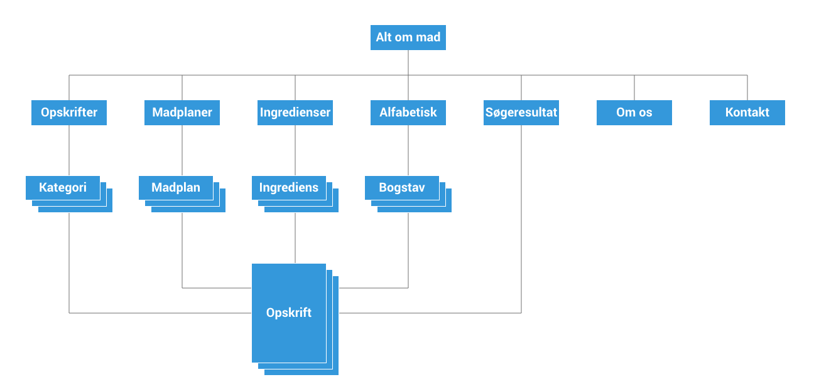

Informationsarktietkur er en måde der referer til organisering og strukturering af information inden for et produkt eller en service. Det handler først og fremmest en om organisering af information på en måde der hjælper af information på en måde der hjælper brugeren med at nå sit mål på en effektiv måde. (PDF om informationsarkitektur)
Med andre ord så at kunne organisere information på når en bruger besøger et website eller bruger en service. God informationsartkietkur tillader brugeren at finde den og bruge den information som de kom for. Rigtig god informationsarktitektur gør at brugeren ikke behøver at finde information - altså websitet opføre sig som brugeren havde forventet.
Dårlig informationsarktitektur neutraliserer inhold, design og programmering og devaluerer websitet for dets ejere såvel som det publiku det blev oprette til at betjene.
Der findes forskellige valg af metoder når man skal organisere ens indhold
Latch metoden blev opfundt af Saul Wurman I 1976. Når man skal bestemme hvilken måde at lave ens informationsarkitekturen på så kan man bruge følgende fem værdier at sortere efter:
Navigation på et website er utroligt vigtigt redskab og som også er en del af informationarktietkur. Navigation betyder 2 ting: At komme fra et sted til et andet og finde ud af hvor man er henne. Når det er vi besøger en webside så er det lidt som om vi er besøger f.eks. en Bilka - forskellen her er at du ved hvor du kommer fra og at man bruge genveje til at komme frem til hvor det er man vil hen.
Der findes flere forskellige måder at man kan komme ind på en direkte underside f.eks. en søgemaskine eller interne links
Der er nogle forskellige spørgsmål som navigeringsdesign har fokus på
Orientering: Hvor er jeg
Rutebeslutninger: Hvilken vej skal jeg vælge?
Mental mapping: Hvordan husker jeg, hvor jeg har været, så kan jeg finde tingene igen eller skyde genveje?
Kommunikation i multimediedesign s/175-176
Når det er du har et website så har du også et form for budskab du gerne vil komme ud med. Det vil du selvføgelig gerne have dine brugere reagere på. Det er det vi kalder for call to action knapper. Det er knapper du bruger i dette tilfælde. Det kan være f.eks. knapper du bruger til at få folk til at købe/download/oprette osv.